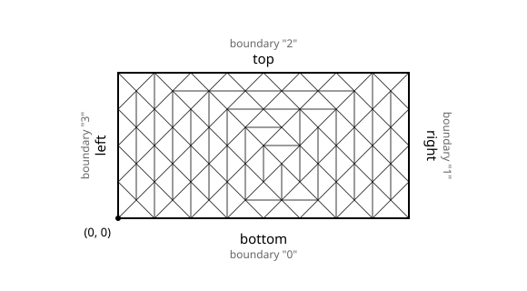

Overview
Heat conduction in a 2D fin, on a generated triangle mesh.
This page solves the 2D heat conduction fin problem on a mesh of triangles that FEAScript
generates itself, from the corners of the domain, with generateTriangleMesh. No
mesh file and no external tool are needed. For the formulation and the theory, see the
basic tutorial; for a mesh made with Gmsh, see the
Gmsh variant.
generateTriangleMesh takes the polygon of the domain, the name of each of its edges
and the size and quality of the elements, and returns a mesh in the same form as one imported
from Gmsh, so it is passed to the model through parsedMesh:
<body>
<!-- ...body region... -->
<script type="module">
import {
FEAScriptModel,
generateTriangleMesh,
plotInterpolatedSolution,
printVersion,
} from "https://core.feascript.com/dist/feascript.esm.js";
window.addEventListener("DOMContentLoaded", () => {
console.log("FEAScript version:", printVersion);
// 1. Create the model and select the physics
const model = new FEAScriptModel();
model.setModelConfig("heatConductionScript");
// 2. Generate the mesh: a 4 m × 2 m rectangle, quadratic triangles of area 0.1 m² at most
const parsedMesh = generateTriangleMesh({
polygon: {
points: [
[0, 0], // Bottom left
[4, 0], // Bottom right
[4, 2], // Top right
[0, 2], // Top left
],
boundaries: ["bottom", "right", "top", "left"], // One name per edge, from point i to point i + 1
},
maxArea: 0.1,
minAngle: 30,
elementOrder: "quadratic",
});
model.setMeshConfig({ parsedMesh });
// 3. Apply the boundary conditions (key = order in which the boundary names first appear)
model.addBoundaryCondition("0", ["constantTemperature", 200]); // Bottom
model.addBoundaryCondition("1", ["constantTemperature", 200]); // Right
model.addBoundaryCondition("2", ["convection", 1, 20]); // Top
model.addBoundaryCondition("3", ["symmetry"]); // Left
// 4. Solve
model.setSolverMethod("lusolve");
const result = model.solve();
// 5. Plot the results
plotInterpolatedSolution(model, result, "contour", "resultsCanvas");
});
</script>
<!-- ...rest of body region... -->
</body>
The settings of the mesh:
-
polygon: the corners of the domain, in order around it, in either direction. The edgeigoes from pointito pointi + 1, and the last edge closes the polygon. Holes are polygons in the same form, listed inholes. -
boundaries: one name per edge, or one name for all of them. Edges with the same name form one boundary, so a curved side made of many short edges can take one name. -
maxArea: the largest element area. For elements of side abouth, use0.433 * h ** 2, the area of the equilateral triangle of sideh. A function(x, y)of the element center grades the mesh, for examplemaxArea: (x, y) => 0.01 + 0.05 * (2 - y)for finer elements towards the convective top edge. -
minAngle: the smallest angle of the elements, in degrees. The refinement always ends below 20.7 degrees (the default is 20) and in practice up to about 33. -
elementOrder:"linear"(3-node) or"quadratic"(6-node) triangles. The mesh dimension and the element order are carried by the mesh, sosetMeshConfigneeds nothing else.
The boundaries are numbered in the order in which their names first appear, the outer polygon
first and then the holes, and get the keys "0", "1", ... in that order.
With the points above, the edges are the bottom, right, top and left sides, so:
"bottom"→model.addBoundaryCondition("0", ["constantTemperature", 200]);"right"→model.addBoundaryCondition("1", ["constantTemperature", 200]);"top"→model.addBoundaryCondition("2", ["convection", 1, 20]);"left"→model.addBoundaryCondition("3", ["symmetry"]);
This order differs from the one of FEAScript's structured meshes (bottom, left, top, right), which the basic tutorial and the Gmsh variant use, so the keys of the right and left sides are swapped here.
Below is the mesh that the settings above generate: 128 quadratic triangles with 281 nodes (with FEAScript 0.4.0), all with angles of at least 30 degrees. The figure is drawn from the same call.

Quadratic triangle mesh of the 4 m × 2 m fin, generated by generateTriangleMesh
The generator meshes any polygon with holes, so it covers geometries that the structured mesh cannot, without leaving the browser. For curved boundaries, approximate them by short edges with one common name. Gmsh remains the tool for quadrilaterals and for meshes that need its full control of the element sizes.
Below is the 2D contour plot of the computed temperature distribution, generated in real time with FEAScript. The temperatures are the same as on the structured and the Gmsh meshes, up to the discretization error of each mesh.
See also the Gmsh variant and the rhomboid fin, on meshes imported from Gmsh.
Stay in the loop
Join the mailing list.
Receive new tutorials, project updates and news.